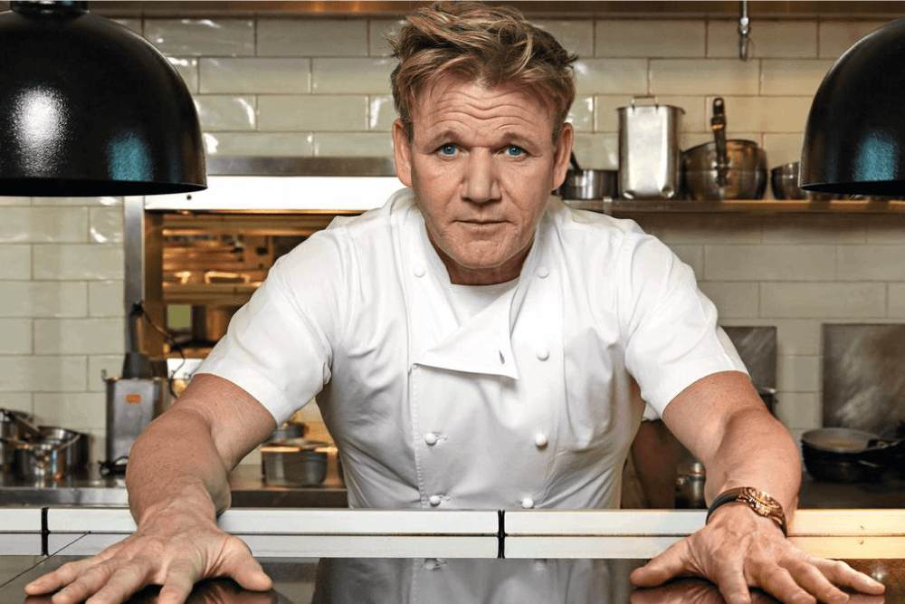
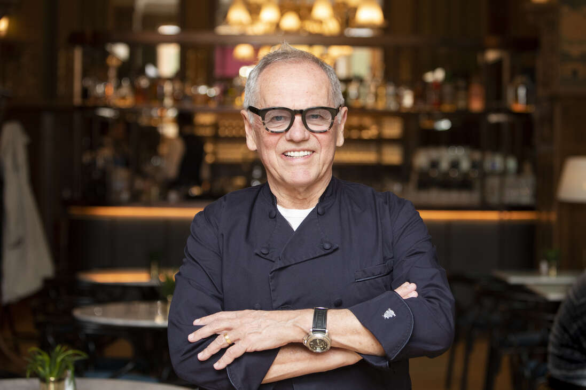
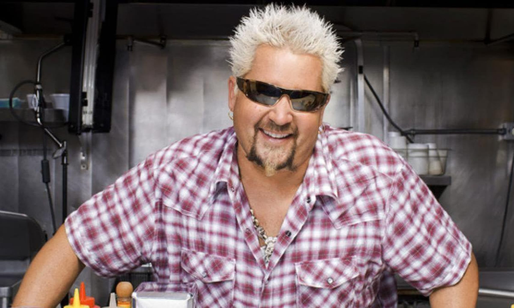
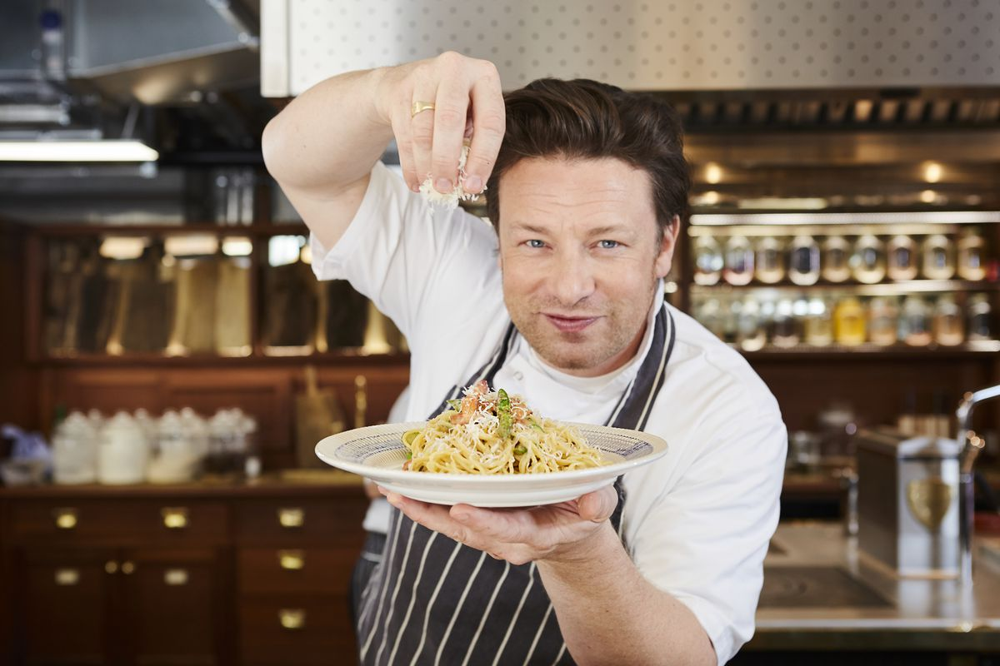

|  |
Gordon Ramsay: |
|
Gordon Ramsay, born in 1966, is a world-renowned Scottish chef, restaurateur, and television personality, celebrated for his fiery personality and uncompromising culinary standards. Known for his blunt and often colorful critiques, Ramsay has become a global icon, with a culinary empire that includes multiple Michelin-starred restaurants, such as the acclaimed Restaurant Gordon Ramsay, Le Pressoir d'Argent, and Gordon Ramsay Hell's Kitchen. Over a career spanning several decades, he has also authored best-selling cookbooks and inspired millions through his hit television shows, including Hell's Kitchen, MasterChef, Kitchen Nightmares, and Hotel Hell. Ramsay's unique teaching style and commitment to excellence have made him one of the most influential figures in the culinary world today, as he continues to shape the industry and inspire aspiring chefs worldwide. |
|  |
Wolgang Puck: |
|
Wolfgang Puck is a culinary legend whose contributions have reshaped the world of fine dining. Born in Austria in 1949, Puck trained in prestigious European kitchens before moving to the United States, where he became a trailblazer in contemporary cuisine. His flagship restaurant, Spago, opened in Los Angeles in 1982 and quickly became an iconic dining destination, blending California ingredients with European techniques. Puck is known for his innovative dishes, such as smoked salmon pizza, and his ability to seamlessly merge flavors from diverse culinary traditions. Beyond his restaurants, Puck’s global empire includes cookbooks, catering services, and a line of kitchen products. His dedication to excellence has earned him numerous awards, including Michelin stars and James Beard accolades, making him a transformative figure in modern gastronomy. |
|  |
Guy Fieri: |
|
Guy Fieri is a larger-than-life personality who has brought a vibrant energy to the culinary scene. Born in Ohio in 1968 and raised in California, Fieri’s journey to fame began after winning The Next Food Network Star in 2006. Known for his signature spiky blond hair, bold personality, and love for comfort food, Fieri became a household name through his hit television series, Diners, Drive-Ins, and Dives, which celebrates America’s unique and eclectic food culture. He is the face of accessible, down-to-earth cuisine, with an emphasis on bold flavors and hearty portions. In addition to his TV career, Fieri operates a successful chain of restaurants, publishes cookbooks, and is a philanthropist who supports disaster relief and culinary education. His charisma and commitment to showcasing local culinary treasures have earned him the title of “The Mayor of Flavortown.” |
|  |
Jamie Oliver: |
|
Jamie Oliver, born in 1975 is an English celebrity chef, restaurateur and author. He is known for his approachable cooking style and passion for healthy eating. He rose to fame with his debut show The Naked Chef, where he presented the bare essentials of cooking. Since then Oliver became a household name, his focus on fresh ingredients and simple recipes inspired millions to start cooking at home. He is also a best selling author and owns multiple successful restaurants including two in Budapest. However he is perhaps best known for his advocacy for transforming school meals and promoting food education. Through initiatives such as the Food Revolution Oliver campaigned to reduce obesity and improve children's diets |